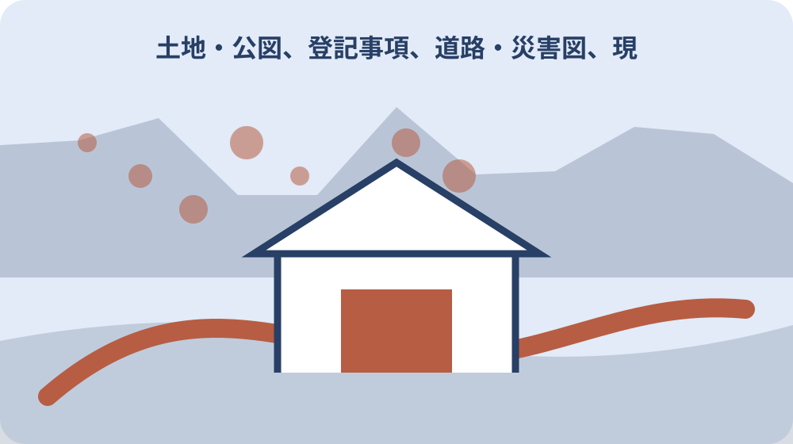

先に結論を確認する
この記事の答え：対象地の地番、調査目的、価格情報の種類、物件種類、検索地域、取引時期、面積帯を一枚に書きます。検索結果から面積、形状、接道など比較条件を写し、用途図等は別欄にして、表示価格だけで査定額を決めません。
森町で最初に照合する条件：検索地域を森町にしただけで比較可能とせず、土地、土地と建物、農地、林地を分け、対象時期と面積帯をそろえる。
結論は価格を決めず比較条件を一枚に固定する
不動産情報ライブラリで森町の価格情報を探す目的は、画面に出た数字を自宅や農地の値段として採用することではありません。対象地と似た条件を選び、似ていない条件を除外し、査定担当へ確認する理由を一枚の公的価格データカードへ残すことです。
カードの上段には対象地番、調べる目的、検索日、価格情報の種類、物件種類、検索地域、対象期間を書きます。中段へ面積、形状、前面道路、建物の有無など表示された比較条件を写し、下段へ用途図、登記、公図、現地確認、専門家への質問を分けて置きます。
国土交通省の取引価格情報は実際の取引に関する調査を基にしますが、個別物件が特定されないよう加工され、価格も丸められています。公示地価や都道府県地価調査とも別の情報です。情報の種類と限界を残してこそ、数字を過信しない比較資料になります。
この記事は売出価格、相続税評価、固定資産評価、融資評価を決める記事ではありません。公的データを使って比較の前提をそろえ、森町の用途図など地域条件を別資料として確認し、不動産会社や土地家屋調査士等へ渡す質問を作るところまでを扱います。
作業を始める日は、対象地資料がそろった日ではなく、何を比較したいかを言葉にできた日です。地番や面積が未確認ならその状態を明記し、確定資料を入手した後の再検索を予定へ置きます。仮の検索と確定条件の検索を別版にすれば、早い段階の数字が家族内で一人歩きすることを防げます。
対象地の地番と調べる目的を先に書く
検索を始める前に、対象を住所の呼び名だけでなく、手元の登記事項や課税明細等で確認できる地番単位に分けます。一つの敷地に複数筆がある場合は、主な一筆だけを全体の代表にせず、筆ごとの地目、面積、名義、利用状態を別行にします。
次に調査目的を一つ選びます。売却査定の準備、購入候補の比較、相続した土地の概況確認、農地や林地を含む一団の整理では、見るべき物件種類が違います。目的欄が曖昧なまま検索すると、土地だけの取引と建物付き取引を同じ価格表へ混ぜてしまいます。
カードには『公的データで確かめたいこと』と『公的データでは決められないこと』を並べます。近隣で同じ種類の情報があるかは検索できますが、対象地の境界、権利、利用可能性、個別の査定額は検索結果だけでは確定できません。空欄を推測値で埋めないことが重要です。
対象地の資料が不足していても、検索を止める必要はありません。ただし仮の地域名や面積帯を使った場合は『仮検索』と明記し、正式な地番や面積を確認した後に再検索します。最初の画面印刷を確定版にせず、確認日と変更理由を版履歴へ残します。
家族から聞いた面積、昔の売買額、近隣のうわさは、公的データの欄へ転記しません。聞取メモとして出所と聞いた日を残し、登記事項や検索結果と一致したかを後で照合します。記憶が違っても削除せず、確認前の情報と確認後の情報を二段に分けると、調査の経緯を説明できます。
地価公示と取引価格情報を別の列に置く
不動産情報ライブラリには、地価公示、都道府県地価調査、不動産取引価格情報が別の価格情報として収録されています。カードでは『公示等の標準地点』と『個別取引の調査情報』を別列にし、数字の出所と時点を一緒に書きます。
地価公示等の地点が対象地の近くに見えても、同じ土地を評価しているとは限りません。地点名、調査年、用途、周辺状況を読み、対象地との距離だけで似ていると判定しません。比較に使うなら、似ている条件と違う条件をそれぞれ一行以上記します。
取引価格情報は当事者調査を基にした情報で、検索結果には物件種類や時期等の条件があります。公示地点の価格と取引情報の価格を一本の折れ線にして上下だけを見るのではなく、資料の成り立ちが違うことを脚注へ残します。
査定担当へ渡すときは『どちらが正しい価格か』ではなく、『この公示地点とこの取引事例は対象地の比較材料になるか』と尋ねます。質問を資料名、検索条件、取得日に結び付けると、回答者も同じ画面をたどりやすくなります。
一覧表の単位も確認します。総額、面積当たりの表示、年次の地点価格を混同すると、数字の桁が近くても意味が違います。カードの列見出しへ資料種別、単位、基準時点を必ず書き、単位を換算した場合は元の値と計算式を別欄に保存します。
公示地点と取引事例の採否表には、候補番号、資料種別、基準時点または取引時期、物件種類、面積帯、採用・保留・除外、理由を置きます。公示地点は標準地点として、取引事例は匿名化された取引情報として扱い、同じ『採用』でも根拠の役割が違うことを文字で示します。
土地・建物・農地・林地を混ぜずに検索する
取引価格情報の物件種類には、宅地の土地、土地と建物、中古マンション等、農地、林地があります。対象が更地でも、近くの建物付き取引を土地だけの取引として転記しません。まず対象地の現況と検索種類を一対一で対応させます。
建物付き取引は、土地面積だけでなく建物の種類、築年、床面積等の条件が価格に含まれ得ます。建物価値を自分で差し引いて更地価格を作らず、建物付きであることを大きく表示し、土地だけの事例とは別の比較候補箱へ置きます。
農地や林地は、宅地と同じ検索表へ混ぜません。現況が畑や山林に見えても、登記地目、利用状態、法令上の手続が一致するとは限りません。価格情報の種類を選ぶ工程と、農地法や森林関係の確認工程を別にします。
一団の土地に宅地、農地、林地が含まれる場合は、全体の総額を面積で一律に割り戻しません。筆ごとに検索種類を置き、比較候補が見つからない筆は『該当事例なし』と残します。情報がないことと価値がないことを同じにしません。

地域と期間をそろえて検索履歴を残す
操作説明に沿って、地域、価格情報の種類、物件種類、時期を順番に指定します。検索条件は画面のスクリーンショットだけでなく文字でも残し、都道府県、市町村、地区、対象年、四半期、物件種類を一行に並べます。
取引価格情報は四半期ごとに公表されます。検索した日に直近取引がまだ掲載されていない可能性もあるため、取引時期とデータ取得日を分けます。『今年検索した』という記録だけでは、どの四半期まで収録されていたか後から確認できません。
地図表示で見られる期間と、一覧やCSVで指定できる期間の違いも確認します。地図上の点だけを数えず、同じ条件で結果一覧を開き、必要ならCSVを保存します。ファイル名には検索日、地域、物件種類、開始期、終了期を入れます。
期間を広げて事例数を増やした場合は、古い取引と新しい取引を同列に扱わず、年または四半期を表示します。時間差を自分で補正して現在価格を作らず、どの程度の期間差なら比較に使えるかを査定担当への質問にします。
検索条件変更履歴は、初回をA、地域を広げた版をB、期間を広げた版をCとして分けます。各版に結果件数と採用候補数を記し、二つ以上の条件を同時に変えません。結果が増えた理由を説明できれば、査定時に比較範囲が広すぎないか具体的に尋ねられます。
面積・形状・接道など比較条件を写す
詳細表示から比較に必要な項目を選び、対象地と候補事例を横並びにします。少なくとも面積、形状、前面道路、幅員、方位、利用状況、都市計画に関する表示、取引時期を確認し、表示がない項目は空欄ではなく『公的データで未確認』と書きます。
面積が近くても、旗竿状、不整形、間口が狭い、接道が異なるなど条件差があれば理由欄へ移します。対象地の条件は現地写真だけで確定せず、登記事項、公図、道路資料等の確認先を結びます。価格差の原因を一つに決めつけません。
前面道路の表示も、法的な道路種別、管理者、境界、接道要件をすべて証明するものとして扱いません。不動産情報ライブラリで見えた項目は比較の入口です。森町や道路管理者への照会が必要な項目は、価格カードから別の照会票へ渡します。
候補を三件選ぶなら、最も価格が近い三件ではなく、条件が似る理由を説明できる三件を選びます。候補から外した事例も一件は保存し、『面積差』『建物付き』『時期が古い』など除外理由を書けば、都合のよい数字だけを選んでいないか確認できます。
匿名化と丸めを踏まえて数字の限界を記す
国土交通省は取引当事者への調査を基に情報を収集し、個別物件が特定できないよう加工して公開しています。そのため、画面の情報から売主、買主、正確な所在地を推定したり、近隣の特定取引だと断定したりしません。
価格は有効数字二桁となるよう丸められています。表示額を一円単位の契約額として家族資料や査定比較へ写さず、『公開値・丸めあり』と注記します。単価を再計算する場合も、元の面積や価格が丸められている限界を一緒に残します。
個々の不動産には、形状、接道、権利、建物、契約条件、当事者事情など公開項目だけでは分からない個別要因があります。価格差を災害リスク、道路、地目など一つの理由へ短絡させず、確認できた事実と推測を別の色で記します。
比較カードの結論欄は『対象地はこの金額』ではなく、『候補Aは面積と時期が近いが接道未確認』『候補Bは建物付きのため土地だけと比較不可』のように書きます。断定を減らすほど、査定担当が補うべき情報が明確になります。
森町の用途図と都市計画情報を別欄で照合する
森町は都市計画図の用途図を公式ページで公開しています。価格カードに用途図の確認欄を設けますが、価格情報と同じ資料として混ぜません。用途地域や都市計画道路等の表示を確認した日、図面名、縮尺、対象地のおおよその位置を記します。
森町の用途図は一万分の一の概略図で、詳細な位置は建設課都市計画係へ確認するよう案内されています。画面を拡大して境界線が地番を通るか判断せず、境付近なら地番、案内図、確認したい線を示して町へ尋ねます。
森町は町の都市計画に関する概要資料も公開しています。価格情報の背景を理解する入口になりますが、個別の建築可否や土地利用承認を保証するものではありません。一定規模以上の土地利用事業には別の公式案内があるため、計画内容と面積を示して要否を確認します。
用途図の窓口販売価格や更新情報も、行動時に公式ページで再確認します。印刷物、ダウンロード図、手元の古い図面を同じ版と考えず、取得日と媒体を記録します。価格比較に使った時点の都市計画資料を後から再現できる形にします。
似た事例と似ていない事例を理由付きで分ける
候補事例を集めたら、対象地との一致項目と相違項目を数えるのではなく、重要度を決めます。物件種類、時期、面積帯がそろわない事例は第一段階で外し、形状、接道、利用状況、都市計画の差は第二段階の質問へ回します。
『近い』『同じ地区』という理由だけでは比較事例にしません。同じ大字でも土地利用や道路条件が異なることがあり、地図上の距離が近くても取引時期が違えば背景も変わります。採用理由は二つ以上、除外理由は一つ以上書きます。
検索結果が少ないときは、地域を広げる、期間を広げる、面積帯を広げる操作を一度に行いません。どの条件を変えた結果なのか分かるよう、一条件ずつ別版で保存します。森町全体へ広げた結果と近隣地区の結果を同じ一覧へ上書きしません。
比較できる事例が見つからない場合も、カードは完成できます。検索条件、結果件数、広げた条件、なお不足する項目を書き、専門家へ『公的データで近い事例が見つからない場合、何を追加調査するか』と尋ねる資料にします。
森町内の検索例を残すときは、対象地を特定する情報を公開用メモへ載せません。家族内の原本カードには地番を持たせ、専門家へ渡す写しには必要な範囲だけを示します。匿名化された取引事例へ、推測した所有者名や正確な位置を書き足さないことも確認項目にします。
査定を頼む前の質問表へ変換する
査定を依頼する前に、価格カードの相違項目を質問へ変えます。『候補Aを比較に使えるか』『建物付き取引から土地だけを分けてよいか』『接道未確認をどの資料で補うか』のように、資料名と事例番号を付けます。
不動産会社へは査定の比較根拠と公的データとの差、土地家屋調査士等へは境界や地積資料、町へは都市計画や土地利用の確認事項というように、質問先を分けます。一人の回答で価格、境界、建築、農地の全条件が確定したと扱いません。
回答欄には、回答日、担当、確認資料、回答内容、追加資料、次の担当先を記します。口頭回答を価格カードの公的事実欄へ直接書き換えず、照会記録として別欄に残します。後から条件が変わったときに、元データと判断を分けて見直せます。
複数社へ査定を頼む場合も、同じ価格カードを渡します。査定額の高低だけでなく、どの比較事例を採用し、どの条件差を調整したかを尋ねます。公的データと査定書の数字が違うこと自体を誤りと決めず、説明の差を比較します。
大石の視点：公的データを結論でなく質問に使う
ここまでの収録内容、検索方法、匿名化、丸め、森町の用途図と都市計画資料は、国土交通省と森町の公式情報で確認できる事実です。ここからは私、大石浩之の実務上の提案であり、森町や国土交通省が指定する査定方法ではありません。
私は、公的価格データの価値は一つの答えを出すことより、家族が同じ条件で質問できることにあると考えます。検索条件、候補事例、除外理由を一枚にすれば、『近所はこの値段らしい』という記憶ではなく、確認可能な資料から話を始められます。
売却を急ぐ場面ほど、画面の最高額や最低額だけを根拠にしないことが大切です。まず対象地の資料不足を見つけ、境界、道路、建物、農地、都市計画など価格以外の確認へ分けます。確認できない事項は弱点ではなく、次の質問先を示す欄として残します。
家族で共有する際は、推測した価格を大きく書くより、資料名と確認日を目立たせます。これは査定を避けるための表ではなく、査定担当の説明を理解し、後日の相続や売却判断でも同じ前提へ戻るための索引だと考えます。
取得日と版を更新して家族へ引き継ぐ
カードの最終欄には、不動産情報ライブラリの検索日、対象期間、保存したCSVや画面のファイル名、森町用途図の取得日、都市計画資料の版、登記事項等の確認日を記します。資料ごとに日付を持たせ、カード作成日だけでまとめません。
更新時は旧版を上書きせず、新しい取引四半期、用途図や案内の更新、対象地資料の追加を差分欄へ記します。候補事例を入れ替えたら、旧候補を外した理由も残します。都合に合わせて比較対象を変えたように見えない監査跡になります。
家族への引継ぎ欄には、対象筆、保管場所、検索条件、専門家への質問、未確認事項、次回更新時期を書きます。価格の数字だけをメッセージで送らず、カードと元資料を同じ管理番号で結びます。古い紙図面しかない場合も廃棄せず、版未確認と表示します。
完成条件は、対象地と検索目的が明確で、価格情報の種類と物件種類を分け、候補の採否理由があり、用途図等を別資料として扱い、未確認事項が質問先へつながっていることです。この形なら、公的データを過信せず査定前の準備を再現できます。
次回更新日は、四半期データの追加だけでなく、売却や購入の予定、相続手続、土地利用の相談時期に合わせて決めます。状況が変わらなくても公式ページの取得日を更新し、リンク切れや表示項目の変更を確認します。更新担当が変わる場合は、同じ検索条件を再現できたかを引継ぎ確認にします。